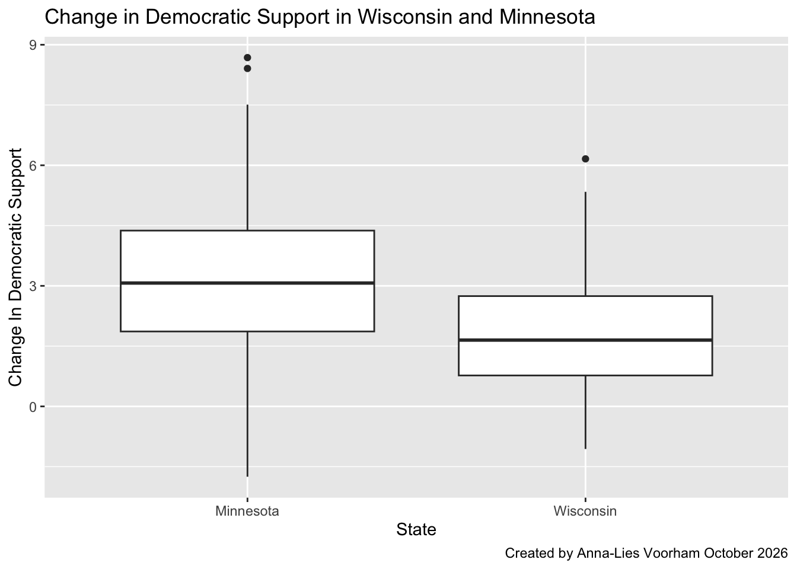

Wrangling
Single Verbs
✏️ Practice select
Use select() to create a simplified dataset that we’ll use throughout the exercises below.
- Store this dataset as
elections_small. - Only keep the following variables:
state_name,county_name,total_votes_20,repub_pct_20,dem_pct_20,total_votes_16,dem_pct_16
Code
state_name county_name total_votes_20 repub_pct_20 dem_pct_20
1 Alabama Autauga County 27770 71.44 27.02
2 Alabama Baldwin County 109679 76.17 22.41
3 Alabama Barbour County 10518 53.45 45.79
4 Alabama Bibb County 9595 78.43 20.70
5 Alabama Blount County 27588 89.57 9.57
6 Alabama Bullock County 4613 24.84 74.70
total_votes_16 dem_pct_16
1 24661 23.96
2 94090 19.57
3 10390 46.66
4 8748 21.42
5 25384 8.47
6 4701 75.09✏️ Filter Hawaii
Whereas select() selects certain variables or columns, filter() keeps certain units of observation or rows relative to their outcome on certain variables. To this end, we must:
Identify the variable(s) that are relevant to the filter.
-
Use a “logical comparison operator” to define which values of the variable to keep:
symbol meaning ==equal to !=not equal to >greater than >=greater than or equal to <less than <=less than or equal to %in% c(???, ???)a list of multiple values Use quotes
""when specifying outcomes of interest for a categorical variable.
To comment/uncomment several lines of code at once, highlight them then click ctrl/cmd+shift+c.
Keep only data on counties in Hawaii.
state_name county_name total_votes_20 repub_pct_20 dem_pct_20
1 Hawaii Hawaii County 87814 30.63 66.88
2 Hawaii Honolulu County 382114 35.66 62.51
3 Hawaii Kauai County 33497 34.58 63.36
4 Hawaii Maui County 71044 31.14 66.59
total_votes_16 dem_pct_16
1 64865 63.61
2 285683 61.48
3 26335 62.49
4 51942 64.45✏️ Interpret %in% Filter
What does this do?
state_name county_name total_votes_20 repub_pct_20 dem_pct_20
1 Delaware Kent County 87025 47.12 51.19
2 Delaware New Castle County 287633 30.72 67.81
3 Delaware Sussex County 129352 55.07 43.82
4 Hawaii Hawaii County 87814 30.63 66.88
5 Hawaii Honolulu County 382114 35.66 62.51
6 Hawaii Kauai County 33497 34.58 63.36
7 Hawaii Maui County 71044 31.14 66.59
total_votes_16 dem_pct_16
1 74253 44.91
2 261468 62.30
3 105814 37.17
4 64865 63.61
5 285683 61.48
6 26335 62.49
7 51942 64.45✏️ Filter Above 93.97%
Keep only data on counties where the Republican got MORE THAN 93.97% of the vote in 2020. THINK: What variable is relevant here?
✏️ Filter At Least 93.97%
Keep only data on counties where the Republican got AT LEAST 93.97% of the vote in 2020. This should have 1 more row (observation) than your answer above.
state_name county_name total_votes_20 repub_pct_20 dem_pct_20
1 Montana Garfield County 813 93.97 5.04
2 Texas Borden County 416 95.43 3.85
3 Texas King County 159 94.97 5.03
4 Texas Roberts County 550 96.18 3.09
total_votes_16 dem_pct_16
1 715 4.76
2 365 8.49
3 159 3.14
4 550 3.64✏️ Filter Texas Two Ways
We can also filter with respect to 2 rules! Here, think what variables are relevant. Keep only data on counties in Texas where the Democrat got more than 65% of the vote in 2020. Do this 2 ways.
Code
state_name county_name total_votes_20 repub_pct_20 dem_pct_20
1 Texas El Paso County 267215 31.56 66.66
2 Texas Presidio County 2217 32.52 65.99
3 Texas Travis County 610349 26.43 71.41
4 Texas Zavala County 4379 34.03 65.40
total_votes_16 dem_pct_16
1 210458 69.14
2 2203 66.18
3 462511 66.26
4 3390 77.67Code
state_name county_name total_votes_20 repub_pct_20 dem_pct_20
1 Texas El Paso County 267215 31.56 66.66
2 Texas Presidio County 2217 32.52 65.99
3 Texas Travis County 610349 26.43 71.41
4 Texas Zavala County 4379 34.03 65.40
total_votes_16 dem_pct_16
1 210458 69.14
2 2203 66.18
3 462511 66.26
4 3390 77.67✏️ Sort Ascending
arrange() arranges or sorts the rows in a dataset according to a given column or variable, in ascending or descending order:
arrange(variable), arrange(desc(variable))
Arrange the counties in elections_small from lowest to highest percentage of 2020 Republican support. Print out just the first 6 rows.
state_name county_name total_votes_20 repub_pct_20
1 District of Columbia District of Columbia 344356 5.40
2 Maryland Prince George's County 424855 8.73
3 Maryland Baltimore city 237461 10.69
4 Virginia Petersburg city 14118 11.22
5 New York New York County 694904 12.26
6 California San Francisco County 443458 12.72
dem_pct_20 total_votes_16 dem_pct_16
1 92.15 280272 92.85
2 89.26 351091 89.33
3 87.28 208980 85.44
4 87.75 13717 87.52
5 86.78 591368 87.17
6 85.27 365295 85.53✏️ Sort Descending
Arrange the counties in elections_small from highest to lowest percentage of 2020 Republican support. Print out just the first 6 rows.
state_name county_name total_votes_20 repub_pct_20 dem_pct_20
1 Texas Roberts County 550 96.18 3.09
2 Texas Borden County 416 95.43 3.85
3 Texas King County 159 94.97 5.03
4 Montana Garfield County 813 93.97 5.04
5 Texas Glasscock County 653 93.57 5.97
6 Nebraska Grant County 402 93.28 4.98
total_votes_16 dem_pct_16
1 550 3.64
2 365 8.49
3 159 3.14
4 715 4.76
5 602 5.65
6 394 5.08✏️ Interpret mutate
mutate() can either transform / mutate an existing variable (column), or define a new variable based on existing ones.
Code
state_name county_name total_votes_20 repub_pct_20 dem_pct_20
1 Alabama Autauga County 27770 71.44 27.02
2 Alabama Baldwin County 109679 76.17 22.41
3 Alabama Barbour County 10518 53.45 45.79
4 Alabama Bibb County 9595 78.43 20.70
5 Alabama Blount County 27588 89.57 9.57
6 Alabama Bullock County 4613 24.84 74.70
total_votes_16 dem_pct_16 diff_20
1 24661 23.96 44.42
2 94090 19.57 53.76
3 10390 46.66 7.66
4 8748 21.42 57.73
5 25384 8.47 80.00
6 4701 75.09 -49.86Code
state_name county_name total_votes_20 repub_pct_20 dem_pct_20
1 Alabama Autauga County 27770 71.44 27.02
2 Alabama Baldwin County 109679 76.17 22.41
3 Alabama Barbour County 10518 53.45 45.79
4 Alabama Bibb County 9595 78.43 20.70
5 Alabama Blount County 27588 89.57 9.57
6 Alabama Bullock County 4613 24.84 74.70
total_votes_16 dem_pct_16 repub_votes_20
1 24661 23.96 19839
2 94090 19.57 83542
3 10390 46.66 5622
4 8748 21.42 7525
5 25384 8.47 24711
6 4701 75.09 1146Code
state_name county_name total_votes_20 repub_pct_20 dem_pct_20
1 Alabama Autauga County 27770 71.44 27.02
2 Alabama Baldwin County 109679 76.17 22.41
3 Alabama Barbour County 10518 53.45 45.79
4 Alabama Bibb County 9595 78.43 20.70
5 Alabama Blount County 27588 89.57 9.57
6 Alabama Bullock County 4613 24.84 74.70
total_votes_16 dem_pct_16 repub_win_20
1 24661 23.96 TRUE
2 94090 19.57 TRUE
3 10390 46.66 TRUE
4 8748 21.42 TRUE
5 25384 8.47 TRUE
6 4701 75.09 FALSE✏️ Define Dem Change
Code
state_name county_name total_votes_20 repub_pct_20 dem_pct_20
1 Alabama Autauga County 27770 71.44 27.02
2 Alabama Baldwin County 109679 76.17 22.41
3 Alabama Barbour County 10518 53.45 45.79
4 Alabama Bibb County 9595 78.43 20.70
5 Alabama Blount County 27588 89.57 9.57
6 Alabama Bullock County 4613 24.84 74.70
total_votes_16 dem_pct_16 dem_diff
1 24661 23.96 3.06
2 94090 19.57 2.84
3 10390 46.66 -0.87
4 8748 21.42 -0.72
5 25384 8.47 1.10
6 4701 75.09 -0.39✏️ Compare Dem Support
Code
state_name county_name total_votes_20 repub_pct_20 dem_pct_20
1 Alabama Autauga County 27770 71.44 27.02
2 Alabama Baldwin County 109679 76.17 22.41
3 Alabama Barbour County 10518 53.45 45.79
4 Alabama Bibb County 9595 78.43 20.70
5 Alabama Blount County 27588 89.57 9.57
6 Alabama Bullock County 4613 24.84 74.70
total_votes_16 dem_pct_16 dem_sprt_diff
1 24661 23.96 TRUE
2 94090 19.57 TRUE
3 10390 46.66 FALSE
4 8748 21.42 FALSE
5 25384 8.47 TRUE
6 4701 75.09 FALSEPipe Series
Let’s now combine these verbs into a pipe series!
✏️ Predict Pipe Output
BEFORE running the below chunk, what do you think it will produce?
Code
state_name county_name total_votes_20 repub_pct_20 dem_pct_20
1 Wisconsin Milwaukee County 458971 29.27 69.13
2 Wisconsin Dane County 344791 22.85 75.46
3 Wisconsin Rock County 85360 43.51 54.66
4 Wisconsin La Crosse County 67884 42.25 55.75
5 Wisconsin Eau Claire County 58275 43.49 54.26
6 Wisconsin Portage County 40603 47.53 50.31
total_votes_16 dem_pct_16
1 434970 66.44
2 304729 71.38
3 75043 52.42
4 62785 51.61
5 54080 50.43
6 38123 48.59✏️ Swap filter & arrange
BEFORE trying, what do you think will happen if you change the order of filter and arrange:
- the results will be the same
- we’ll get an error
- we won’t get an error, but the results will be different
Code
state_name county_name total_votes_20 repub_pct_20 dem_pct_20
1 Wisconsin Milwaukee County 458971 29.27 69.13
2 Wisconsin Dane County 344791 22.85 75.46
3 Wisconsin Rock County 85360 43.51 54.66
4 Wisconsin La Crosse County 67884 42.25 55.75
5 Wisconsin Eau Claire County 58275 43.49 54.26
6 Wisconsin Portage County 40603 47.53 50.31
total_votes_16 dem_pct_16
1 434970 66.44
2 304729 71.38
3 75043 52.42
4 62785 51.61
5 54080 50.43
6 38123 48.59✏️ Explain Filtering First
Whether or not the order of filter() and arrange() changes the results, what is one advantage of filtering before arranging?
✏️ Predict mutate Pipe
BEFORE running the below chunk, what do you think it will produce?
Code
county_name repub_pct_20 dem_pct_20 repub_win_20
1 Kent County 47.12 51.19 FALSE
2 New Castle County 30.72 67.81 FALSE
3 Sussex County 55.07 43.82 TRUE✏️ Swap mutate & select
BEFORE trying, what do you think will happen if you change the order of mutate and select:
- the results will be the same
- we’ll get an error
- we won’t get an error, but the results will be different
Code
county_name repub_pct_20 dem_pct_20 repub_win_20
1 Kent County 47.12 51.19 FALSE
2 New Castle County 30.72 67.81 FALSE
3 Sussex County 55.07 43.82 TRUE✏️ Show MN Dem Votes
We’ve now learned 4 of the 6 wrangling verbs: select, filter, mutate, arrange. Let’s practice combining these into pipe series. Here are some hot tips:
- Before writing any code, translate the prompt: how many distinct wrangling steps are needed and what verb do we need in each step?
- Add each verb one at a time – don’t try writing a whole chunk at once.
Show just the counties in Minnesota and their Democratic 2020 vote percentage, from highest to lowest. Your answer should have just 2 columns.
dem_pct_20 county_name
1 35.98 Aitkin County
2 47.79 Anoka County
3 33.96 Becker County
4 47.24 Beltrami County
5 32.70 Benton County
6 35.41 Big Stone County
7 50.84 Blue Earth County
8 32.48 Brown County
9 49.58 Carlton County
10 46.37 Carver County
11 34.68 Cass County
12 33.67 Chippewa County
13 34.15 Chisago County
14 50.74 Clay County
15 26.76 Clearwater County
16 65.58 Cook County
17 30.03 Cottonwood County
18 34.17 Crow Wing County
19 55.73 Dakota County
20 33.47 Dodge County
21 32.56 Douglas County
22 31.98 Faribault County
23 37.48 Fillmore County
24 40.96 Freeborn County
25 41.23 Goodhue County
26 35.58 Grant County
27 70.46 Hennepin County
28 42.42 Houston County
29 34.42 Hubbard County
30 29.45 Isanti County
31 40.61 Itasca County
32 29.99 Jackson County
33 30.02 Kanabec County
34 36.12 Kandiyohi County
35 38.12 Kittson County
36 38.41 Koochiching County
37 35.79 Lac qui Parle County
38 50.64 Lake County
39 27.87 Lake of the Woods County
40 33.73 Le Sueur County
41 30.08 Lincoln County
42 35.94 Lyon County
43 30.64 McLeod County
44 48.26 Mahnomen County
45 25.33 Marshall County
46 30.02 Martin County
47 28.58 Meeker County
48 29.98 Mille Lacs County
49 22.33 Morrison County
50 46.00 Mower County
51 29.60 Murray County
52 50.31 Nicollet County
53 33.65 Nobles County
54 40.80 Norman County
55 54.16 Olmsted County
56 32.85 Otter Tail County
57 35.29 Pennington County
58 33.87 Pine County
59 26.44 Pipestone County
60 34.88 Polk County
61 35.27 Pope County
62 71.50 Ramsey County
63 31.47 Red Lake County
64 28.43 Redwood County
65 30.71 Renville County
66 48.76 Rice County
67 29.69 Rock County
68 25.98 Roseau County
69 56.64 St. Louis County
70 45.52 Scott County
71 32.48 Sherburne County
72 28.60 Sibley County
73 37.58 Stearns County
74 37.47 Steele County
75 37.80 Stevens County
76 34.35 Swift County
77 24.79 Todd County
78 35.46 Traverse County
79 35.78 Wabasha County
80 26.35 Wadena County
81 33.65 Waseca County
82 53.46 Washington County
83 38.20 Watonwan County
84 29.91 Wilkin County
85 49.07 Winona County
86 34.49 Wright County
87 30.54 Yellow Medicine County✏️ Build mn_wi
Create a new dataset named mn_wi that sorts the counties in Minnesota and Wisconsin from lowest to highest in terms of the change in Democratic vote percentage in 2020 vs 2016. This dataset should include the following variables (and only these variables): state_name, county_name, dem_pct_20, dem_pct_16, and a variable measuring the change in Democratic vote percentage in 2020 vs 2016.
Code
# Define the dataset
# Only store the results once you're confident that they're correct
mn_wi <- elections_small %>%
filter( state_name %in% c("Wisconsin", "Minnesota")) %>%
select(state_name, county_name, dem_pct_20, dem_pct_16) %>%
mutate(dem_diff = dem_pct_20 - dem_pct_16) %>%
arrange(dem_diff)
# Check out the first 6 rows to confirm your results
head(mn_wi) state_name county_name dem_pct_20 dem_pct_16 dem_diff
1 Minnesota Stevens County 37.80 39.55 -1.75
2 Wisconsin Forest County 34.06 35.12 -1.06
3 Wisconsin Kewaunee County 32.87 33.73 -0.86
4 Wisconsin Clark County 30.37 31.19 -0.82
5 Wisconsin Adams County 36.63 37.40 -0.77
6 Wisconsin Trempealeau County 40.86 41.57 -0.71✏️ Plot Dem Change
Construct and discuss a plot of the county-level change in Democratic vote percent in 2020 vs 2016, and how this differs between Minnesota and Wisconsin.
Code
ggplot(mn_wi, (aes(x = state_name, y = dem_diff))) +
geom_boxplot() +
labs(x = "State",
y = "Change In Democratic Support",
title = "Change in Democratic Support in Wisconsin and Minnesota",
caption = "Created by Anna-Lies Voorham October 2026",
alt = "Boxplots compare changes in Democratic support in Minnesota and Wisconsin. Minnesota has a higher median increase (about 3 points) and greater variability than Wisconsin (about 1.6 points). Both states have high outliers, with Minnesota showing two near 8.5 points and Wisconsin one near 6 points.")
Summaries
✏️ Try summarize
6 verbs: select, filter, arrange, mutate, summarize, group_by.
Let’s talk about the last 2 verbs. summarize() (or equivalently summarise()) takes an entire data frame as input and outputs a single row with one or more summary statistics. For each chunk below, indicate what the code does.
median(repub_pct_20)
1 68.29 median_repub
1 68.29✏️ Try summarize + group_by
Finally, group_by() groups the units of observation or rows of a data frame by a specified set of variables. Alone, this function doesn’t change the appearance of our dataset or seem to do anything at all:
Though it does change the underlying structure of the dataset:
Where it really shines is in partnership with summarize().
Notice that group_by() with summarize() produces a new data frame or tibble! But the units of observation are now states instead of counties within states.
✏️ Sort States by Votes
Let’s practice (some of) our 6 verbs: select, filter, arrange, mutate, summarize, group_by. Remember:
- Before writing any code, translate the given prompts: how many distinct wrangling steps are needed and what verb do we need in each step?
- Add each verb one at a time.
Each of the next 3 exercises is a challenge. If you get really stuck, use the second chunk, which asks the same question with hints.
Sort the states from the most to least total votes cast in 2020.
✏️ Total Votes by Party
In 2020, what was the total number of votes for the Democratic candidate and the total number of votes for the Republican candidate in each state?
✏️ Find Dem-Won States
What states did the Democratic candidate win in 2020?
Practice
✏️ Find Brazil Wins
Recall the World Cup football/soccer data from TidyTuesday:
You can find a codebook here. Use (some of) our 6 verbs (select, filter, arrange, mutate, summarize, group_by) and data viz to address the following prompts.
In what years did Brazil win the World Cup?
✏️ Find Top Attendance
What were the 6 World Cups with the highest attendance?
✏️ Plot Goals Scored
Construct a univariate plot of goals_scored (no wrangling necessary). This provides a visual summary of how the number of goals_scored varies from World Cup to World Cup.
✏️ Summarize Goals Scored
Let’s follow up the plot with some more precise numerical summaries. Calculate the min, median, and max number of goals_scored across all World Cups. NOTE: Visually compare these numerical summaries to what you observed in the plot.
✏️ Plot Goals Over Time
Construct a bivariate plot of how the number of goals_scored in the World Cup has changed over the years. No wrangling necessary.
✏️ Plot Goals per Game
Our above summaries might be a bit misleading. The number of games played at the World Cup varies. Construct a bivariate plot of how the typical number of goals per game has changed over the years.
✏️ Practice on Your Data
Return to the TidyTuesday data you’re using in Homework 3. Use your new wrangling skills to play around. What new insights can you gain?!